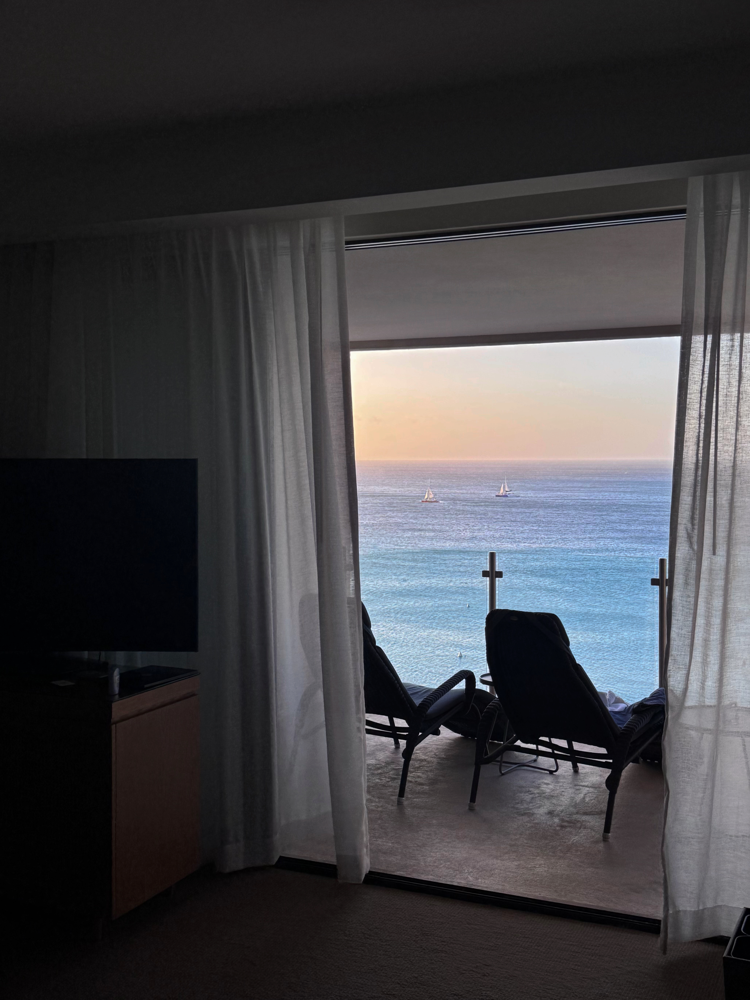
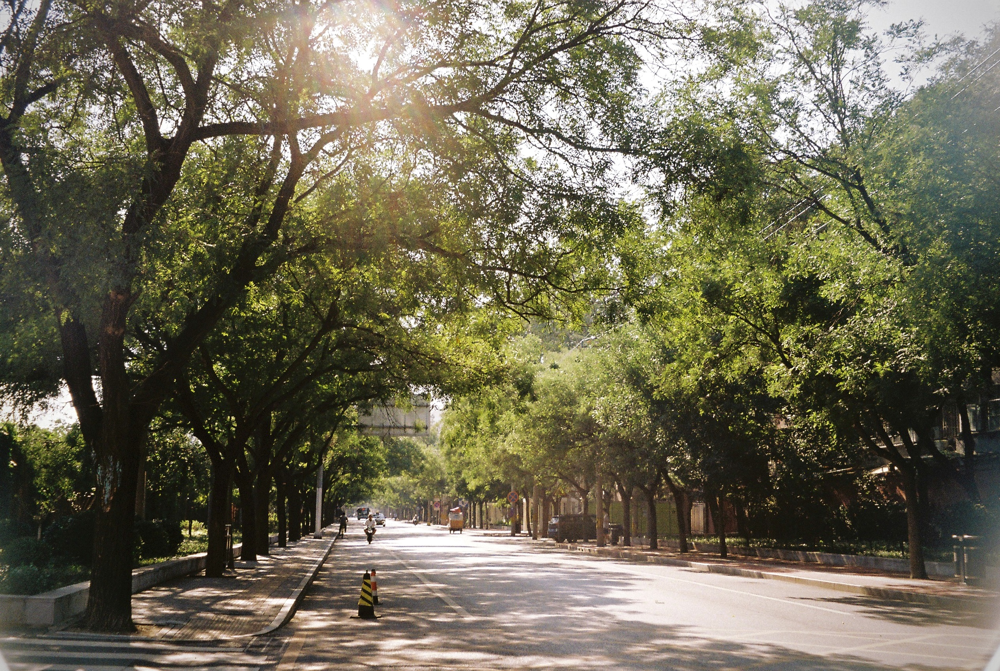
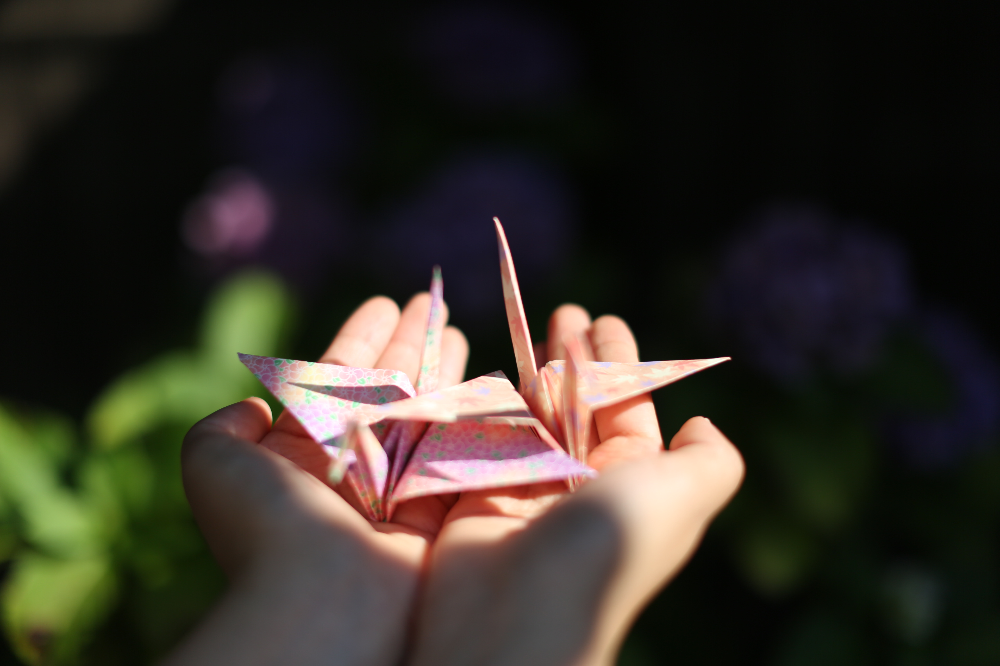
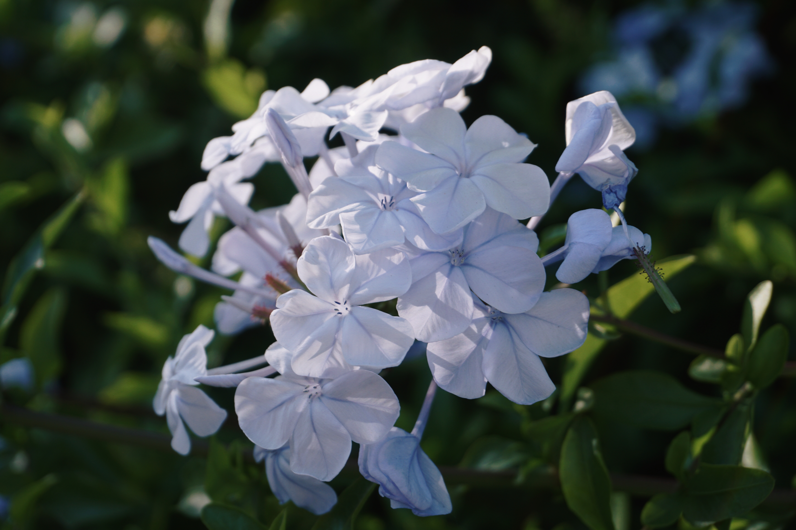
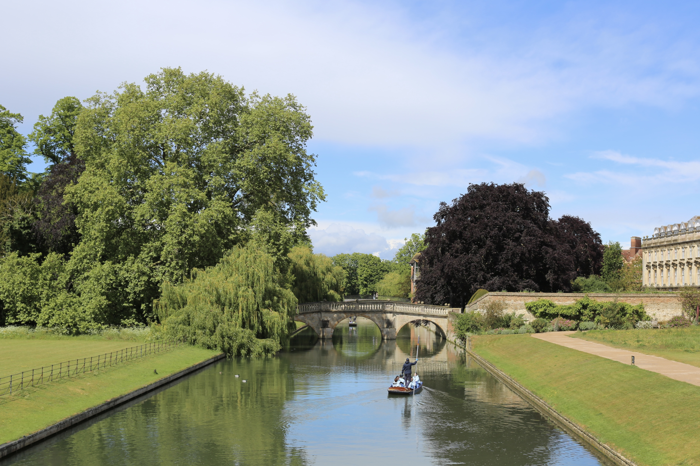
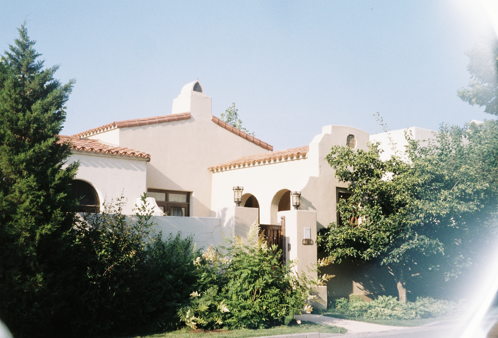
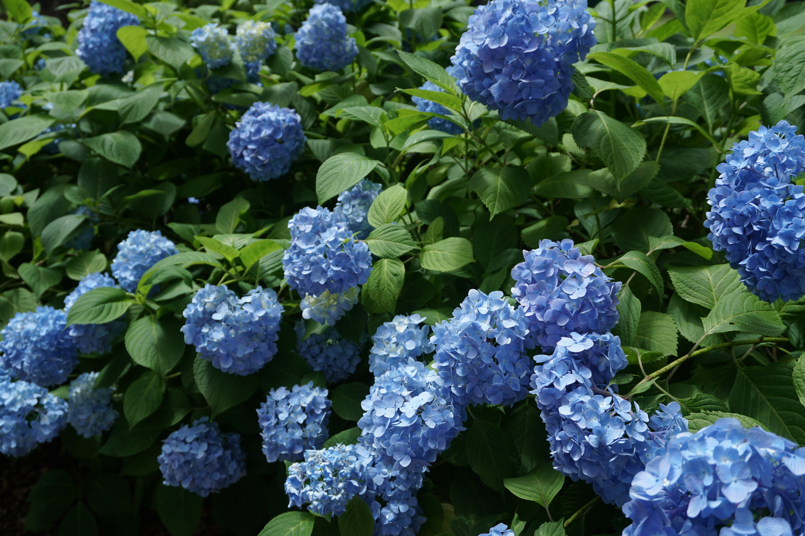
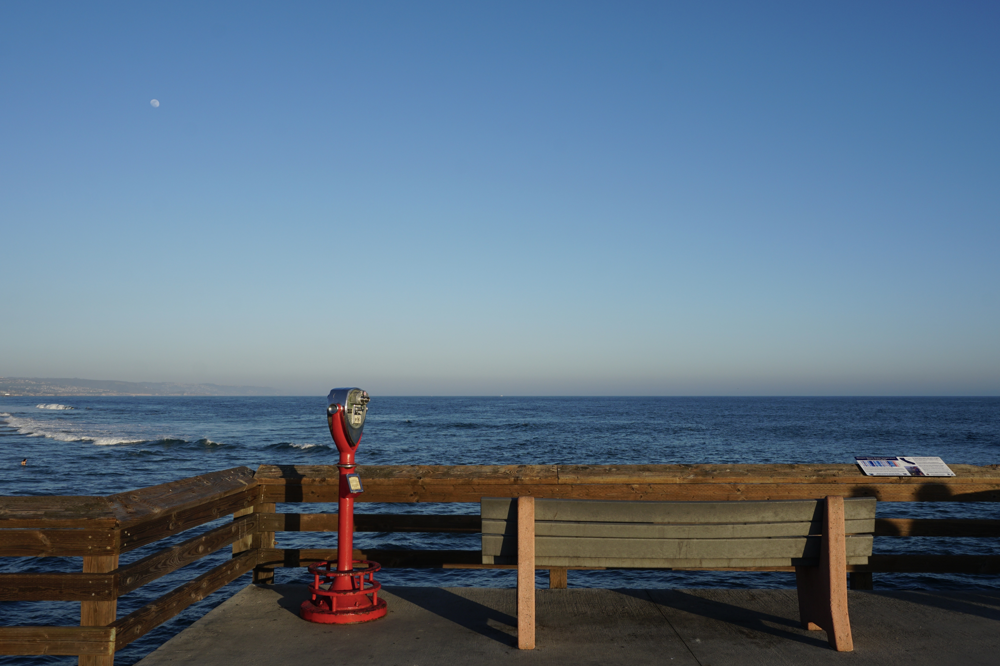

A moment I looked out
Through the open doorway, the window frame turns the sea and sky into a quiet painting. Even now, this hotel in Aruba remains one of my favorites.
Palm Beach, Aruba

A moment I noticed
Sunlight falls through the trees onto the street I grew up on, scattering patches of light across a road filled with familiar memories.
Beijing, China

A moment I wandered
I wandered without a destination. The campus looked different when I wasn't rushing somewhere.
Chapel Hill, North Carolina

A moment I stopped
A tree lined street I had never walked before, yet somehow it felt familiar.
Evanston, Illinois

A moment I carried home
In Arashiyama, a café owner folded a small piece of the journey into my hands.
Kyoto, Japan

A moment I looked closer
Somewhere in Beverly Hills, small pale flowers gather into one shape. Looking closer, each flower has its own edges.
Los Angeles, California

A moment I looked twice
The sky appears twice: once above the shore, and once on the water.
Cambridge, England

A moment I looked up
The Palace of Versailles seems perfectly ordered, and so does the sky above it.
Paris, France

A moment I wondered
A quiet house behind the trees. For a moment, I wondered what it would be like to live there.
Qinhuangdao, China

A moment I found color
For a moment, blue seemed to grow out of every patch of green.
Tokyo, Japan

A moment I stayed
The waves kept folding into the shore. I watched until I stopped counting them.
Irvine, California